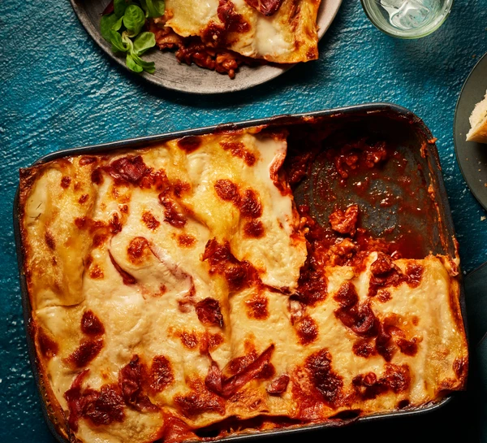

Cowboy Casserole

Description
Prepare this easy homemade lasagne ahead of time and save in the freezer, uncooked, for when you need it during a busy week.
Just bake for an extra 45 mins
Ingredients
- 2 olive oil, plus extra for the dish
- 750g lean beef mince
- 90g pack prosciutto
- 800g passata or half our basic tomato sauce
- 200ml hot beef stock
Steps
- To make the meat sauce, heat 2 tbsp olive oil in a frying pan and cook 750g lean beef mince in two batches for about 10 mins until browned all over.
- Finely chop 4 slices of prosciutto from a 90g pack, then stir through the meat mixture.
- Pour over 800g passata or half our basic tomato sauce recipe and 200ml hot beef stock. Add a little grated nutmeg, then season.
- Bring up to the boil, then simmer for 30 mins until the sauce looks rich.